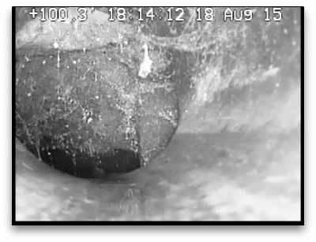

Although most of our sewer scopes reveal a healthy side sewer, the problems that we do find can be categorized into a handful of terms. We’re committed to providing you with unbiased and accurate reports. Since we’re not plumbers or contractors (we only perform sewer scopes with our state-of-the art inspection camera), we don’t have any reason to exaggerate the condition of an abnormality.
Please feel free to use these definitions for your reference, but know that the information presented on this page is subject to Sewercam’s No Warranty Clause.
Break

sewer scope inspection camera reveals a break—a complete collapse of the pipe
A break is any breach in the pipe’s wall. If the break is on the bottom of the pipe and completely breaches is pipe’s wall, the break will allow sewage to enter the ground, compromising the function of the side sewer.
The Sewercam technician performing the sewer scope may find that the break does not effect the overall function of the pipe (like when the inspection camera captures a small break in the top of the pipe), but breaks are usually a must-fix abnormality.
sewer scope inspection camera reveals buildup in the side sewer—notice the camera sitting almost 50% high in the pipe
A buildup is any significant material that has remained on the pipe’s wall. The sewer scope could reveal debris (soil and aggregate) or solidified cooking oils.
Depending on the severity of the buildup, the Sewercam technician may recommend cleaning the side sewer—a common maintenance action for side sewer lines.
sewer scope inspection camera reveals a constriction in the side sewer—a fairly minor crushing on the right side of the SDR-35 pipe
Constriction, in this context, is the lessening of the interior diameter of a pipe via the pipe’s own material. A kink or fold in a plastic pipe would classify as constriction. The interior “choking” that Orangeburg pipe often exhibits is a form of constriction as well.
Constriction is not commonly found by Sewercam’s inspection camera, but it is one of the few abnormalities that plastic pipes can exhibit. Your Sewercam technician will advise you on the effect that a constriction may have on the function of your pipe.
sewer scope inspection camera reveals corrosion in the side sewer—the rough side wall is not yet seriously effecting the function of the pipe
Corrosion is the gradual destruction of the pipe’s interior surface. Rusting is a common form of corrosion. Cast iron pipe commonly corrodes at a very slow rate.
The inspection camera may find areas of heavy corrosion that either restrict the interior diameter of the pipe or compromise the integrity of the pipe’ wall. The severity of corrosion, not the presence of corrosion, is the determining factor in the health of your side sewer.
sewer scope inspection camera reveals erosion in the side sewer—you can see the typical water-flow line towards the bottom of this 6″ concrete pipe
Erosion is the natural removal of aggregate and cement from the interior of a concrete pipe. Erosion is a slow process that tends to accelerate towards the end of a pipe’s life. As the surface of a concrete pipe become more eroded, the force of the water tends to wash away more cement, loosening the aggregate and washing it down the side sewer. Erosion is also generally not consistent in severity throughout a pipe; it is often most severe where the force of the water is greatest (close to the house) and less severe further down the line.
The Sewercam sewer scope may reveal erosion, but not all erosion requires repair—it is part of the natural life cycle of concrete pipe.
sewer scope inspection camera reveals a foreign-object in the side sewer—close to the left side of the camera’s view there is a grounding rod driven through the top of the concrete pipe
A foreign object is any remaining object not native to the side sewer. A foreign object could be something as harmless as a child’s small toy car that will soon wash down the line, or it might be something as severe as a piece of rebar driven through the center of the pipe.
Your Sewercam sewer scope technician will accurately determine the impact that the foreign object has on the side sewer’s function.
sewer scope inspection camera reveals a fracture in the side sewer—the top-left of the camera’s view shows fracturing in the concrete pipe
A fracture is the cracking of the pipe’s wall. Fracturing is most commonly seen in vitrified clay pipe.
The presence of fracturing does not require the replacement of the pipe—only fractures that impair the function of the side sewer (or fractures that could be classified as a break in the pipe’s wall) may require repair. Your Sewercam sewer scope technician can determine the fracturing’s effect on the side sewer’s function.
sewer scope inspection camera reveals a low-area in the side sewer—effluent is not draining completely from this section of cast-iron pipe
A low area is a length of the side sewer that never completely drains. The presence of a low area requires that care be taken as to what is sent into the line, as buildup may occur over time when sewage doesn’t completely drain down the line.
Generally speaking, only low areas that block 2″ of a 4″ pipe (50%) may need to be repaired (a condition that your Sewercam technician will determine).
sewer scope inspection camera reveals an offset in the side sewer—in this case, the pipe has shifted so severely that the sewage can flow beneath the pipe, compromising the function of the side sewer and eroding the pipe’s bedding, causing further shifting over time
An offset is a difference in height between to adjoining sections of pipe. Offsets are fairly common in sectioned pipe made of concrete or vitrified clay pipe.
The sewer scope inspection camera may reveal an offset exposing the underlying pipe bed or presenting a significant barrier to the flow of sewage (a serious condition requiring repair), but often the inspection camera reveals an offset that doesn't require repair. Your Sewercam sewer scope technician will be able to determine the offset’s effect on the side sewer’s function.
sewer scope inspection camera reveals root-intrusion in the side sewer—the roots are blocking about 25% of the pipe on the bottom-left side; when caught at this stage, root intrusion is an easily-treatable abnormality
Root intrusion is the presence of live root matter in the side sewer, usually through a pipe section’s joint. Root intrusion often intensifies in the late spring and early fall. Root intrusion is present in about 80% of the side-sewers we scope, but to varying degrees.
Not all root intrusion requires immediate treatment, and several treatment options exist. Your Sewercam inspection technician will be able to recommend a root treatment that fits the severity of the root intrusion and physical condition of the side sewer.